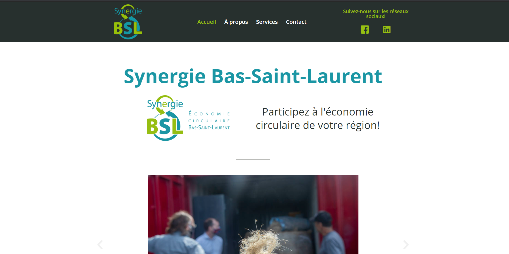

Site web Wordpress avec conseil marketing
J'ai construit le site web de l'organisme Synergie Bas-Saint-Laurent qui font la promotion de l'économie circulaire dans le Bas-Saint-Laurent.

Pour ce projet, j'ai aider à la réalisation du plan de marketing et de communication web avec la responsable chez Synergie Bas-Saint-Laurent. J'ai analysé les besoins du client et par la suite j'ai conceptualisé un site web que j'ai fait approuvé par le client. Par la suite, j'ai construit avec l'outils Wordpress le document en question.
Compétences acquises ou travaillées: